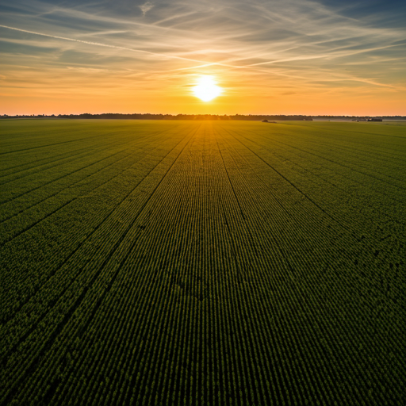
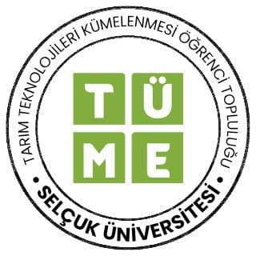
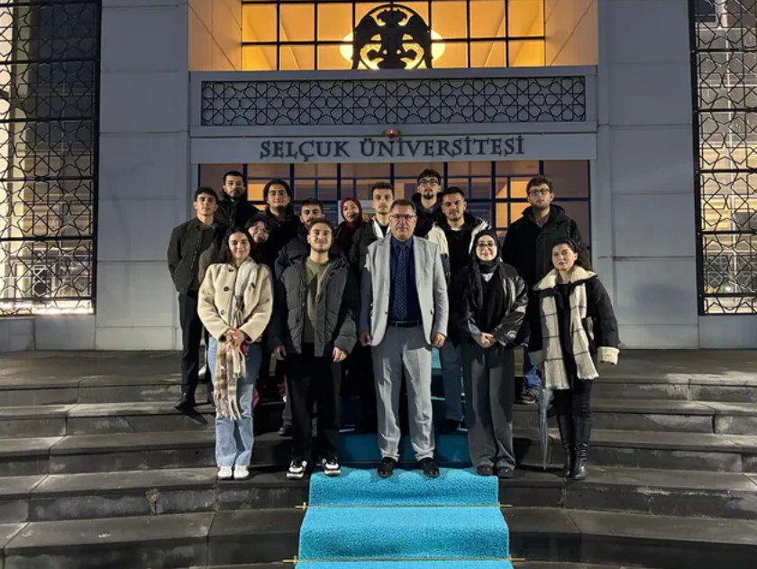
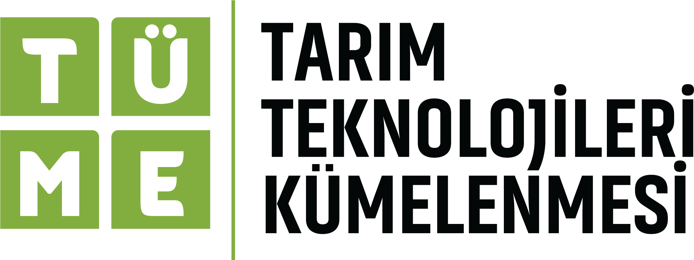
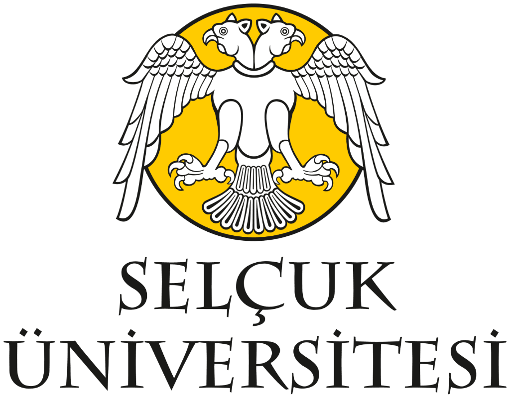

Geleceğin
Vizyonu
Selçuk'ta Yetişiyor.
Teknolojinin sınırlarını zorlayan, inovasyon odaklı projelerimizle yarının dünyasını farklı disiplinlerin gücüyle bugünden inşa ediyoruz. Akademik disiplin, pratik uygulama ve çok seslilik bir arada.

Büyüyen ve Üreten Bir Topluluk
Farklı uzmanlıkların kesişim noktasında, somut hedeflerle çalışıyoruz.
Biz Kimiz, Vizyon & Misyonumuz
Toprağın bilgeliği ve teknolojinin gücüyle, geleceğin üretim modellerini şekillendiriyoruz.
"Toprağın bilgeliği ile teknolojinin gücünü bir araya getiriyoruz."
TÜME; üretimin geleceğini birlikte inşa etmek için kurulan bir ekosistemdir. Bilgisayar mühendisliği, ziraat ve veteriner hekimlik öğrencilerini aynı çatı altında buluşturarak gerçek sorunlara yerli mühendislik çözümleri üretiyoruz.
"Dijital tarım ve hayvancılık dönüşümünde öncü, teknoloji odaklı ve sürdürülebilir üretim modelleriyle global düzeyde değer yaratan bir topluluk olmak."
"Tarım ve hayvancılık alanında yerli ve milli teknolojik çözümler geliştirerek ülkemizin dışa bağımlılığını azaltmak ve disiplinlerarası bir çalışma kültürüyle geleceğin mühendislerini yetiştirmek."
Öne Çıkan Projelerimiz

TÜME CİKSÖR
Tavuklarda hastalıkların henüz insan kulağıyla duyulamayan erken safhalarındaki ses değişimlerini analiz eden yapay zeka tabanlı akustik takip sistemi.

TÜME İNGEK
Sağmal ineklerde topallığı klinik öncesi dönemde bacak ağırlık oranlarındaki mikro değişimlerden tespit eden otonom erken uyarı sistemi.

TÜME POLENYÖN
Kiraz bahçelerinde yetersiz çapraz tozlaşmayı önlemek amacıyla arı aktivitelerini görüntü işleme ve koku sinyalleriyle yönlendiren akıllı sistem.
Gelişim Yolculuğumuz
Fikirden sahaya uzanan yolculuğumuzda attığımız adımlar.
Topluluk Kuruluşu
Selçuk Üniversitesi bünyesinde Tarım Teknolojileri Kümelenmesi Öğrenci Topluluğu kuruldu. Mühendislik, ziraat ve veterinerlik fakültelerinden öğrenciler ortak bir vizyonla bir araya geldi.

TEKNOFEST Başvuruları & Proje Geliştirme
TEKNOFEST Tarım Teknolojileri Yarışması kapsamında 4 yenilikçi Ar-Ge projemizle resmi başvurular yapıldı. Kapsül Teknoloji Platformu atölyelerinde prototip üretimi ve saha testleri hızla hayata geçirildi.
TEKNOFEST'te Biz
TEKNOFEST Tarım Teknolojileri Yarışması finallerinde yarışan Kapsül TÜME İNGEK takımımız Türkiye 5.'si olarak büyük bir başarı elde etti.
Destekçilerimiz & Paydaşlarımız
Geleceğin tarım teknolojilerini geliştirirken vizyonumuza inanan kurumlarla yan yana yürüyoruz.

TÜME Ekosistemi
Türkiye Mühendisler Ekosistemi; projelerimizin ana hamisi, mentörü ve stratejik kurumsal partnerimizdir.
Web Sitesini Ziyaret Et open_in_new
Kapsül Platformu
TEKNOFEST hazırlık sürecimizde teknik altyapı, atölye olanakları ve yarışma mentörlüğü sağlar.
Web Sitesini Ziyaret Et open_in_new
Selçuk Üniversitesi
Farklı fakültelerden akademik danışmanlarımız ve laboratuvar altyapısıyla bilimsel çalışmalarımızı destekler.
Web Sitesini Ziyaret Et open_in_newBu Vizyonun Bir Parçası Ol.
Mühendislik, ziraat, veterinerlik, yazılım veya tasarım... Disiplinin ne olursa olsun, tarım ve hayvancılık teknolojilerinin geleceğini birlikte şekillendirelim.